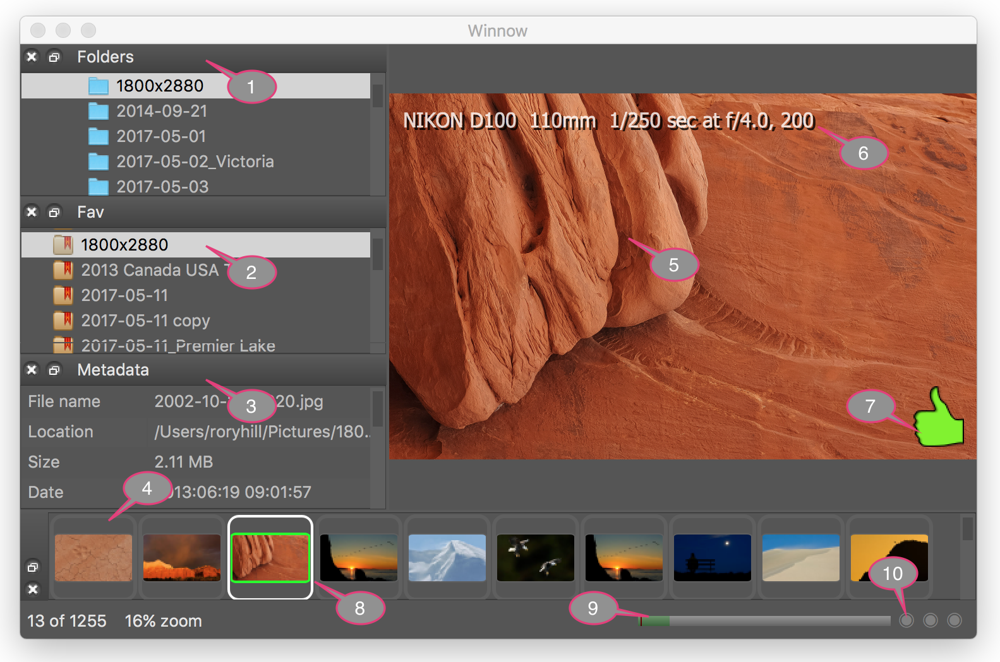
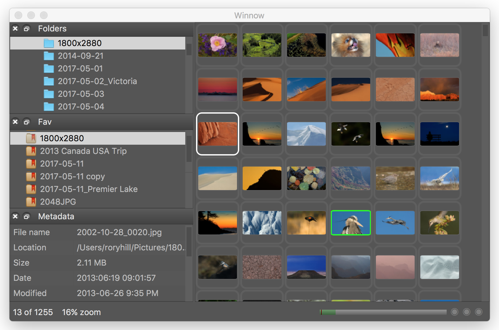

Winnow Help
Overview
Winnow is an image viewer designed to quickly view raw files and jpgs and
“winnow” down to the “picks” that are copied to the
user's computer from the camera storage medium. It also serves as a general
image viewer and can launch other programs to edit images and it has a simple
slideshow feature.
Winnow supports the following file types: ARW, BMP, CR2, CUR, DDS, GIF,
ICNS, ICO, JPEG, JP2, JPE, MNG, NEF, ORF, PBM, PGM, PNG, PPM, RAF, RW2, SR2,
SVG, SVG2, TGA, TIF, WBMP, WEBP, XBM and XPM.
Camera makers supported: Canon, Fuji, Nikon, Olympus, Panasonic and Sony.
Quick tips
Winnow can be highly customized which might leave parts “stranded”
on secondary monitors that are missing in action. Use the shortcut
⇧⌘W (or in the menu Window >
Workspace > Default workspace) to reset to the default workspace.
Anatomy
Loupe view

- The folder panel. Panels (or docks) can be resized, moved to the top,
left, right or bottom of the main window, or floated as a separate
window.
- The fav panel is used to bookmark your favourite folders for quick
access.
- The metadata panel displays information about the selected image.
- The thumbs panel shows small thumbnails for all the images in the
folder. If “Include subfolders” has been selected then all
subfolder images will also be displayed.
- The loupe view, where the image is displayed. Clicking on the image
will zoom to 100% centered on the mouse click location.
- The shooting information can be toggled via the shortcut
I.
- The thumbs up icon shows this image has been picked. The list of images
can be filtered to only show picks and only the picks are copied when
“Ingest / Copy” is chosen.
- This image is the current selected (white border) and has also been
picked (green border).
- This is the image cache status display. The entire bar represents all
the images in the thumb list. The green part shows the images that
have been cached and the tiny red bar shows where the current selection
is situated. Cached images display much faster.
- The cache status buttons (metadata, thumbs and full size images
respectively) turn green when caching is active.
Grid view
